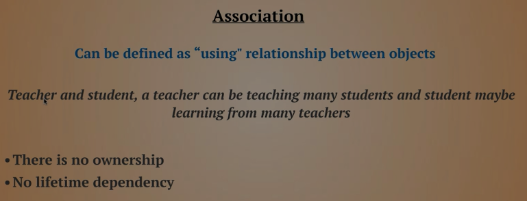

Basic
Input / Output
// Reading input from user.
string name = Console.ReadLine();
int num = int.Parse(Console.ReadLine()); // parse the string into integer.
# Handle if user doesn't provide an integer
int x = 0;
int.TryParse(Console.ReadLine(), out x);
// Printing the output
Console.WriteLine("Hello " + name);
Console.Write("Hello {0}", name);
Data Types
byte ByteNumber = 123; // 1 byte (0 --> 255)
sbyte SByteNum = -12; // 1 byte (-128 --> 127)
short shortNumber = 2; // 2 bytes (-32,768 --> 32,768)
ushort UshortNum = 12; // 2 bytes (0 --> 65,535)
int intNumber = 10; // 4 bytes (-2,147,483,648 --> 2,147,483,648)
uint UintNum = 120; // 4 bytes (0 --> 4,294,967,295)
long LongNum = 213; // 8 bytes (-9,223,372,036,854,775,808 --> +9,223,...)
ulong ULongNum = 12; // 8 bytes (0 --> 18,446,744,073,709,551,615)
float floatNumber = 10.123f; // 4 bytes.
double douNumber = 121.234d; // 8 bytes.
decimal decNumber = 123m; // 16 bytes.
string name = "Mosaab";
char character = 'M';
bool condition = true;
// Let C# determine the type of data.
// using "var" keyword.
var test = 1000;
Casting
int intNumber = 10;
float floatNumber = 10.123f;
double douNumber = 121.234d;
string name = "";
# First way.
name = intNumber.ToString();
# Second way: using Convert class.
searialNo = Convert.ToInt32 (anyNo);
# Third way: direct casting.
searialNo = (int)anyNo;
DateTime
# DateTime
DateTime myDate = new DateTime(2020, 5, 25);
DateTime myDate = DateTime.Today;
DateTime myDate = DateTime.Now;
# Show DateTime
Console.WriteLine(myDate.ToShortDateString()); // show only the date (short format).
Console.WriteLine(myDate.ToShortTimeString()); // show only the time (short format).
Console.WriteLine(myDate.ToLongDateString()); // (long format)
Console.WriteLine(myDate.ToLongTimeString()); // (long format)
# Formatted datetime.
string formattedDate = string.Format("Date is {0: yyyy MMMM dddd HH mm ss tt}", myDate);
Console.WriteLine(formattedDate);
If Condition
if (num1 > num2)
{
Console.WriteLine ("Num1 is larger than Num2");
}
else if (num1 < num2)
{
Console.WriteLine ("Num1 is less than Num2");
}
else
{
Console.WriteLine ("Num1 equals Num2");
}
Constants
const double gravity = 9.8d;
String Manipulations
string movieName = " Lord of the RingS ";
// Indexing
Console.WriteLine (movieName[12]);
// Trim
Console.WriteLine (movieName.Trim());
// Upper Case
Console.WriteLine (movieName.ToUpper ().Trim ());
// Lower Case
Console.WriteLine (movieName.Trim ().ToLower ());
// Length
Console.WriteLine (movieName.Length);
// Replace
Console.WriteLine (movieName.Replace ('l', 'L').Trim ());
// Index of
Console.WriteLine (movieName.IndexOf ('o'));
// Last Index of
Console.WriteLine (movieName.LastIndexOf ('o'));
// Substring
Console.WriteLine (movieName.Trim().Substring (5, 2));
// Remove after Index
Console.WriteLine (movieName.Trim().Remove (4));
// Insert
Console.WriteLine (movieName.Trim().Insert (0, "Added "));
Escape Characters
// Ignore the special characters.
string path = @"C:\nami\tark";
// Don't ignore the special characters.
string path = "C:\\nami\\tark"
String Interpolation
string name = "Mosaab";
Console.WriteLine("Welcome " + name);
Console.WriteLine("Welcome {0}", name);
Console.WriteLine($"Welcome {name}");
Loops
// For Loop
for(int i = 0; i <= 10; i++) {
Console.WriteLine (i);
}
// While Loop
int x = 5;
while (x <= 10) {
Console.WriteLine (x++);
}
Math
double x = 4.226d;
// Ceiling
Console.WriteLine($"Ceiling: {Math.Ceiling(x)}");
// Floor
Console.WriteLine($"Floor: {Math.Floor(x)}");
// Round
Console.WriteLine($"Round: {Math.Round(x, 2)}");
// Truncate
Console.WriteLine($"Truncate: {Math.Truncate(x)}");
// Max
Console.WriteLine($"Max: {Math.Max(x, y)}");
// Min
Console.WriteLine($"Min: {Math.Min(x, y)}");
// Sqrt
Console.WriteLine($"Sqrt: {Math.Sqrt(y)}");
// POW
Console.WriteLine($"Pow: {Math.Pow(2, 2)}");
Random
// Random Integer.
Random rand = new Random();
int x = 0;
x = rand.Next(1, 13);
Console.WriteLine("Month: " + x);
// Random Float
double y = 0;
y = rand.NextDouble() * 10;
Console.WriteLine("Random Double: " + y);
Array
Arrays
// Instansiate an array
int[] nums = new int[5] { 1, 2, 3, 4, 5 };
string[] days = { "Sun", "Mon", "Tue", "Wed", "Thur", "Fri", "Sat" };
// Loop over the arrays. using FOR
for (int i=0; i < nums.Length; i++) {
Console.WriteLine (nums [i]);
}
// Loop Over the array. using FOREACH.
foreach(var day in days) {
Console.WriteLine (day);
}
Method/Function
1. Basic Structure
// Define the method outside of the Main method.
static void DisplayMessage() {
Console.WriteLine("Process is done");
}
2. Parameters
// Define the method outside of the Main method.
static int Add(int x, int y) {
return x + y
}
3. value Vs. reference
// variable has to be initialized.
int x = 10;
// outside of the main method
static void ChangeX(ref int x) {
x = 200;
}
// to call the function as follows:
ChangeX(ref x)
// if variable is not instialized, we can use "out" keyword.
int x;
// outside of the main method.
static void Change(out int x) {
x = 200;
}
// use it like this.
Change(out x);
4. Overloaded Methods
static void WelcomeGuest() {
Console.WriteLine("Something");
}
static void WelcomeGuest(string name) {
Console.WriteLine($"Welcome {name}");
}
OOP
Class & Getter & Setter
// everthing is by default private
class Person {
string firstName;
public string lastName;
DateTime birthDate;
string country;
// Getter & Setter
public string FirstName {
get { return firstName; }
set { firstName = value; }
}
// Another way of Getter & Setter
public DateTime BirthDate { get; set; }
}
// instatiating the class in the main method
Person perOne = new Person();
perOne.FirstName = "Mosaab";
perOne.BirthDate = new DateTime(12, 1, 1996);
Constructor
// everthing is by default private
class Person {
string firstName;
public string lastName;
DateTime birthDate;
string country;
// Constructor
public Person (string first, string last) {
firstName = first;
lastName = last;
}
}
// instatiating the class in the main method
Person perOne = new Person("Mosaab", "Muhammad");
Static Methods
Used without the need to instantiate the class.
static void Main() {
Person person = new Person();
person.SayHi(); // called from the static method.
}
static void SayHi() {
Console.WriteLine("Hi!, from static method");
}
class Person {
public void SayHi() {
// print something.
}
}
Inheritance

class Dog : Animal {
}
Access Modifiers
- Public: Access is not restricted.
- Protected: Access is limited to the containing class or types derived from the containing class.
- Private: Access is limited to the containing type.
- Internal: Access is limited to the current assembly.
- Protected Internal: Access is limited to the current assembly or types derived from the containing class.
Polymorphism
use `virtual` in the parent class, and `override` in the child class.
class MainClass
{
public static void Main (string[] args)
{
Shape[] shapes = new Shape[3];
shapes [0] = new Line ();
shapes [1] = new Circle ();
shapes [2] = new Triangle ();
foreach (var shape in shapes) {
shape.Draw ();
}
}
}
class Shape {
public virtual void Draw() {
Console.WriteLine ("I am a simple shape");
}
}
class Circle : Shape {
public override void Draw() {
Console.WriteLine ("I am a Circle");
}
}
class Triangle : Shape {
public override void Draw() {
Console.WriteLine ("I am a Triangel");
}
}
class Line : Shape {
public override void Draw() {
Console.WriteLine ("I am a Line");
}
}
Abstraction
Abstract Class is a concept or an idea not associated with any specific instance. "Can't be instantiated"
class MainClass
{
static void Main()
{
Line line = new Line ();
line.SayHi();
}
}
abstract class Shape
{
public void SayHi()
{
Console.WriteLine ("Hi from the abstract class.");
}
abstract public void Draw();
}
class Line : Shape
{
public override void Draw()
{
Console.WriteLine ("Hi Im a line");
}
}
#region & #endregion
// region is used to fold the code.
class Program {
public static void Main() {
Mercedes car = new Mercedes ();
car.DisplayInfo ();
}
}
#region Car = This is the solution for the car exercies
class Car {
#region Properties
private decimal price;
protected int maxSpeed;
public string color;
#endregion
protected decimal Price {
get { return price; }
set { price = value; }
}
public virtual void DisplayInfo() {
price = 10000;
maxSpeed = 300;
color = "Black";
Console.WriteLine ($"Default values: price is {Price}, max speed = {maxSpeed}, color = {color}");
}
}
class Mercedes : Car {
public override void DisplayInfo() {
base.DisplayInfo ();
base.Price = 15000;
base.color = "blue";
base.maxSpeed = 200;
Console.WriteLine ($"Overriden values: price = {Price}, speed = {maxSpeed}, color = {color}");
}
}
#endregion
Sealed Class can't be inherted
// Animal class CAN'T be inherted.
sealed class Animal {
public int number = 200;
}
Static Class
- You can only have static members
- You can't create an instance of it
- They are implicitly sealed
class Program {
public static void Main() {
// There's no need to instantiate a class.
Animal.GetAge ();
}
}
static class Animal {
// members must be static
static public string name;
// methods must be static
static public void GetAge() {
Console.WriteLine (DateTime.Now.Year - DateTime.Now.AddYears (-2).Year);
}
}
Nested Class
class Program {
public static void Main() {
Animal animal = new Animal ();
// instantiate a dog nested class.
Animal.Dog dog = new Animal.Dog ();
// instantiate a cat nested class.
Animal.Cat cat = new Animal.Cat ();
}
}
class Animal {
public string name;
public string country;
public class Dog {
public string breed;
public string nickName;
}
public class Cat {
public string CatName;
}
}
Partial Class
when you write parts of the same class in different places.class Program {
public static void Main() {
Animal animal = new Animal ();
Console.WriteLine (animal.age + " " + animal.name);
}
}
partial class Animal {
public int age = 13;
}
partial class Animal {
public string name = "Max";
}
Namespace
namespace Learning_C_Sharp
{
class Program {
public static void Main() {
System.Console.WriteLine ();
NameSpace.Animal animal = new NameSpace.Animal ();
animal.SayHi ();
}
}
}
namespace NameSpace {
class Animal {
public string animalColor;
public void SayHi() {
Console.WriteLine ("Hi from my own namespace");
}
}
}
Struct

namespace Learning_C_Sharp
{
class Program {
public static void Main() {
Employee emp = new Employee ("Mosaab", "Data Scientist", 9000);
Console.WriteLine ($"Name: {emp.name}, Job: {emp.job}, Salary: ");
}
}
struct Employee {
public string name;
public string job;
private decimal salary;
public Employee(string EmpName, string EmpJob, decimal EmpSalary) {
name = EmpName;
job = EmpJob;
salary = EmpSalary;
}
//public decimal Salary () {get; set;}
public void SayHi() {
Console.WriteLine ("Hi from the method in struct");
}
}
}
Enum
namespace Learning_C_Sharp {
class Program {
public static void Main() {
string weekDayName = WeekDay.Monday.ToString ();
WeekDay day = WeekDay.Sunday;
Console.WriteLine ((int)day+" "+weekDayName);
}
}
enum WeekDay {
Monday,
Tuesday,
Wednesday,
Thursday,
Friday = 40,
Saturday = 50,
Sunday = 60
}
}
this Keyword
namespace Learning_C_Sharp {
class Program {
public static void Main() {
Animal ani = new Animal("Mosaab");
Console.WriteLine ($"Hello {ani.Name}");
}
}
class Animal {
string name;
public Animal (string name) {
this.name = name;
}
public string Name {
get { return name; }
set { name = value; }
}
}
}
Interface
Interface Vs Abstract
namespace Learning_C_Sharp {
class Program {
public static void Main() {
Dog dog = new Dog ();
dog.Attack ();
dog.Run ();
}
}
public interface IAnimal {
void Run();
}
public interface IDogCommands : IAnimal{
void Stay();
void Sit();
void Attack();
string DogName { get; set; }
}
class Dog : IDogCommands, IAnimal {
private string DogBreed;
public void Stay() {
Console.WriteLine ("Do is staying");
}
public void Sit() {
Console.WriteLine ("Dog is sitting.");
}
public void Attack() {
Console.WriteLine ("Attack");
}
public void Run() {
Console.WriteLine ("Run");
}
public string DogName { get; set; }
}
}
Composition
- Composition is defined as "part-of" relationship between objects, i.e. Engine is part of Car.
- The lifetime of the child instance is denpendant on the owner or the parent class instance. Child objects doesn't have their lifecycle without parent object.
- If a parent object is deleted, all its child objects will also be deleted
Aggregation
Association

Advanced
.NET
.NET is a component of Windows that includes a virtual execution system called the (CLR) Common Language Runtime and a unified set of class libraries.
Debug.WriteLine()
using System.Diagnostics;
namespace Learning_C_Sharp {
class Program {
public static void Main() {
int x = 0;
int y = 2;
Debug.WriteLine($"x = {x}");
Debug.WriteLineIf(y > 0, $"y = {y}");
}
}
}
Documentation
Write /// then it will show like this:/// <summary>
/// Class Animal will be a base class for the child classes like Dogs.
/// </summary>
class Program {
}
Files
using System.IO;
namespace Learning_C_Sharp {
class Program {
public static void Main() {
// WRITING
string file = @"path/to/your/file";
StreamWriter sw = new StreamWriter(file, true);
sw.WriteLine ("John");
sw.WriteLine ("Ahmed");
sw.Close ();
// READING
string file = @"path/to/your/file";
StreamReader sr = new StreamReader(file);
Console.WriteLine(sr.ReadToEnd());
Console.WriteLine("File Ended");
sr.Close();
}
}
}
Console.Color
namespace Learning_C_Sharp {
class Program {
public static void Main() {
string msg = "Hallo, Guten Morgen";
Console.ForegroundColor = ConsoleColor.Green;
Console.WriteLine (msg);
Console.ForegroundColor = ConsoleColor.DarkYellow;
Console.BackgroundColor = ConsoleColor.White;
Console.WriteLine (msg);
}
}
}
Digit Seperator
var distance = 149_600_000;
"default" Keyword
namespace Learning_C_Sharp {
class Program {
public static void Main() {
long longVar = default(long);
string str = default(string);
int integer = default(int);
Console.WriteLine ($"{longVar}, {str}, {integer}");
}
}
}
Optional parameters
namespace Learning_C_Sharp {
class Program {
public static void Main() {
print();
}
public static void print(object msg = null) {
Console.WriteLine(msg);
}
}
}
Named parameters
namespace Learning_C_Sharp {
class Program {
public static void Main()
{
DisplayInfo(playerName: "Ronaldo", playerNum: 11, playerGoals: 23);
}
public static void print(object msg = null) {
Console.WriteLine(msg);
}
public static void DisplayInfo(int playerNum,
string playerName,
int playerGoals,
string country="Unkown")
{
print(playerNum);
print(playerName);
print(playerGoals);
print(country);
}
}
}
Generic parameters
namespace Learning_C_Sharp {
class Program {
public static void Main()
{
print("hello");
print(10);
print(Tuple.Create(10, 20));
}
public static void print<T>(T msg)
{
Console.WriteLine(msg);
}
}
}
"params" keyword
namespace Learning_C_Sharp {
class Program {
public static void Main()
{
printAll("Ahemd", "Mohamed", "Sayed", "Shaker");
}
public static void print<T>(T msg)
{
Console.WriteLine(msg);
}
public static void printAll<T>]](params T[] names)
{
foreach(var name in names)
{
print(name);
}
}
}
}
Extention methods
namespace Learning_C_Sharp {
class Program {
public static void Main()
{
int x = 0;
string y = "100";
Console.WriteLine(x.IsGreater(10));
Console.WriteLine(y.IsNumber());
}
}
static class CustomExtention
{
public static bool IsGreater(this int value, int number)
{
return value > number;
}
public static bool IsNumber(this string text)
{
return int.TryParse(text, out int result);
}
}
}
Stopwatch
using System;
using System.Diagnostics;
namespace Learning_C_Sharp {
class Program {
public static void Main()
{
Stopwatch watch = new Stopwatch();
watch.Start();
for(int i = 0; i < 1000; i++)
{
}
watch.Stop();
print($"MilliSeconds: {watch.Elapsed.Milliseconds}");
print($"Total in Milli: {watch.Elapsed.TotalMilliseconds}");
print($"Total Seconds: {watch.Elapsed.TotalSeconds}");
print($"Seconds: {watch.Elapsed.Seconds}");
print($"Ticks: {watch.Elapsed.Ticks}");
}
public static void print<T>(T str)
{
Console.WriteLine(str);
}
}
}
Delegates
A delegate is a reference type variable that holds the reference to a method. Which means delegates allow methods to be passed as parameters.
namespace Learning_C_Sharp {
// void delegate with no argument.
public delegate void PlayerInfoDel();
// Void delegate with one string argument.
public delegate void PlayerInfoWithNameDel(string playerName);
// Void Delegate with one string and one integer arguments.
public delegate void PlayerInfoNameWithGoalsDel(string name, int goals);
class Program
{
public static void Main()
{
PlayerInfoDel ronaldoino = new PlayerInfoDel(DisplayInfo);
ronaldoino.Invoke();
// or we can invoke without using Invoke
ronaldoino();
PlayerInfoWithNameDel playerName = new PlayerInfoWithNameDel(DisplayInfo);
playerName("Messi");
PlayerInfoNameWithGoalsDel player = new PlayerInfoNameWithGoalsDel(HandlePlayerInfoNameWithGoalsDel);
player("Mosaab", 10);
}
static void HandlePlayerInfoNameWithGoalsDel(string name, int goals)
{
print($"Information about: {name}, goals: {goals}");
}
public static void print<T>(T str)
{
Console.WriteLine(str);
}
public static void DisplayInfo()
{
print("Information about: Ronaldinho");
}
public static void DisplayInfo(string name)
{
print($"Information about: {name}");
}
public static void DisplayInfo(string name, int goals)
{
}
}
}
Multi-cast Delegates
namespace Learning_C_Sharp {
public delegate void SayHiDelegate();
class Program
{
public static void Main()
{
SayHiDelegate sayHi = null;
sayHi = new SayHiDelegate(sayHiEnglish);
sayHi += new SayHiDelegate(sayHiSpanish);
sayHi += new SayHiDelegate(sayHiGerman);
sayHi();
}
public static void print<T>(T msg)
{
Console.WriteLine(msg);
}
public static void sayHiEnglish()
{
print("Hi there.");
}
public static void sayHiSpanish()
{
print("Hola.");
}
public static void sayHiGerman()
{
print("Hallo.");
}
}
}
Generic Delegates
namespace Learning_C_Sharp {
public delegate T DisplayInfo<T>(T value);
class Program
{
public static void Main()
{
DisplayInfo<int> Num = new DisplayInfo<int>(DisplayValue);
Num(100);
}
public static void print<T>(T msg)
{
Console.WriteLine(msg);
}
public static T DisplayValue<T>(T value)
{
print($"Hi there. {value.GetType().Name}");
return value;
}
}
}
Anonymous Methods
namespace Learning_C_Sharp {
delegate void DisplayDel();
delegate void Display2Del(int num);
class Program
{
public static void Main()
{
DisplayDel Num = delegate { print("Hi there, Anonymous method"); };
Num();
Display2Del Num2 = delegate (int num2) { print($"Hi {num2}"); };
Num2(10002);
}
public static void print<T>(T msg)
{
Console.WriteLine(msg);
}
}
}
Lambda Method
namespace Learning_C_Sharp {
delegate void Display2Del(int num);
delegate void DisplayMsgDel();
class Program
{
public static void Main()
{
Display2Del Num2 = n => print($"n*3: {n * 3}");
Num2(10);
DisplayMsgDel msg = () => print($"Cool man, cool");
msg();
}
public static void print<T>(T msg)
{
Console.WriteLine(msg);
}
}
}
Lambda methods with Generic collection
namespace Learning_C_Sharp {
class Program
{
public static void Main()
{
List<int> list = new List<int>();
list.Add(1); list.Add(2); list.Add(5); list.Add(10);
list.Add(5); list.Add(3); list.Add(9); list.Add(8);
var odd = list.Where(n => n % 2 != 0).ToList();
var even = list.Where(n => n % 2 == 0).ToList();
foreach(var item in odd)
{
print(item);
}
print("-----------------");
foreach(var item in even)
{
print(item);
}
}
public static void print<T>(T msg)
{
Console.WriteLine(msg);
}
}
}
Collections
ArrayList (Non-Generic)
using System.Collections;
namespace Learning_C_Sharp {
class Program {
public static void Main() {
// Creating
ArrayList array = new ArrayList ();
// Adding
array.Add ("first");
array.Add (12);
array.Add (41.2d);
// Looping
foreach(var item in array) {
Console.WriteLine (item);
}
// Inserting
array.Insert (1, "second");
Console.WriteLine ("----------------");
// Length & Indexing
for(var i = 0; i < array.Count; i++) {
Console.WriteLine (array [i]);
}
// Sorting
ArrayList arr2 = new ArrayList ();
arr2.Add ("Ahmed");
arr2.Add ("Mosaab");
arr2.Add ("Sally");
arr2.Sort ();
Console.WriteLine ("----------------");
foreach(var item in arr2) {
Console.WriteLine (item);
}
// Reversing
arr2.Reverse ();
Console.WriteLine ("----------------");
foreach(var item in arr2) {
Console.WriteLine (item);
}
// Removing
arr2.Remove ("Ahmed"); // Remove an item.
arr2.RemoveAt (0); // Remove item at index.
//arr2.RemoveRange (1, 3); // Remove items between these range.
//arr2.Clear (); // Remove all items.
Console.WriteLine ("----------------");
foreach(var item in arr2) {
Console.WriteLine (item);
}
// Contains
Console.WriteLine (array.Contains (12));
// GetRange
ArrayList subArr = new ArrayList ();
subArr = array.GetRange (0, 2);
foreach(var item in subArr) {
Console.WriteLine (item);
}
}
}
}
Hashtables (Non-Generic)
using System.Collections;
namespace Learning_C_Sharp {
class Program {
public static void Main() {
// Creating
Hashtable table = new Hashtable ();
// Adding
table.Add ("Microsoft", "USA");
table.Add ("Sony", "Japan");
table.Add ("IKEA", "Sweden");
table.Add ("Mercedes", "Germany");
// Looping
foreach (DictionaryEntry item in table) {
Console.WriteLine ($"{item.Key}: {item.Value}");
}
for(var i = 0; i < table .Count; i++) {
Console.WriteLine ($"{table.GetKey(i)}: {list.GetByIndex(i)}");
}
// Length
Console.WriteLine (table.Count);
// Remove
table.Remove ("IKEA");
foreach(DictionaryEntry item in table) {
Console.WriteLine (item.Key);
}
// Contains
Console.WriteLine (table.Contains ("panasonic")); // for keys.
Console.WriteLine (table.ContainsValue ("Japan")); // for values.
// To ArrayList
ArrayList arr = new ArrayList (table.Values);
foreach (var item in arr) {
Console.WriteLine (item);
}
}
}
}
SortedList (Non-Generic)
- There is generic and non-generic SortedList
- Stores the key-value pairs in ascending order of the key.
- Key must be unique and can't be null.
- Value can be null or duplicate.
- Value can be of any type
using System.Collections;
namespace Learning_C_Sharp {
class Program {
public static void Main() {
// Creating
SortedList list = new SortedList ();
// Adding
/// No duplicate keys.
/// duplicate values allowed.
list.Add (10, "Jan");
list.Add (2, "Feb");
list.Add (3, "Mar");
list.Add (4, "Apr");
// Length
Console.WriteLine (list.Count);
// Looping
foreach(DictionaryEntry item in list) {
Console.WriteLine ($"{item.Key}: {item.Value}");
}
for(var i = 0; i < list.Count; i++) {
Console.WriteLine ($"{list.GetKey(i)}: {list.GetByIndex(i)}");
}
// Index
Console.WriteLine (list [10].ToString ());
// Remove
list.RemoveAt (1);
foreach(DictionaryEntry item in list) {
print ($"{item.Key}: {item.Value}");
}
// Contains
print (list.ContainsValue ("Apr"));
// To ArrayList
ArrayList arr = new ArrayList (list.Values);
}
public static void print(object msg) {
Console.WriteLine (msg);
}
}
}
Stack (Non-Generic)
using System.Collections;
namespace Learning_C_Sharp {
class Program {
public static void Main() {
// Creating.
Stack st = new Stack ();
// Adding.
st.Push ("David");
st.Push ("Emmy");
st.Push ("Jack");
st.Push ("Emma");
// Length.
print (st.Count);
// Looping.
foreach(var item in st) {
print (item);
}
// Peek at the first element to go.
print ("---------------");
print (st.Peek ());
// Remove (pop).
print ("---------------");
print (st.Pop ());
print (st.Count);
foreach(var item in st) {
print (item);
}
}
public static void print(object msg) {
Console.WriteLine (msg);
}
}
}
Queue (Non-Generic)
using System.Collections;
namespace Learning_C_Sharp {
class Program {
public static void Main() {
// Creating.
Queue qu = new Queue ();
// Adding
qu.Enqueue ("Cavin");
qu.Enqueue ("Tom");
qu.Enqueue ("Emma");
// Length
print (qu.Count);
// Loop
foreach(var item in qu) {
print (item);
}
// Peek at the first element.
print ($"First element: {qu.Peek ()}");
// Remove (Dequeue)
print (qu.Dequeue ());
}
public static void print(object msg) {
Console.WriteLine (msg);
}
}
}
BitArray (Non-Generic)
using System.Collections;
namespace Learning_C_Sharp {
class Program {
public static void Main() {
// Creating.
bool[] boolArr = new bool[4];
boolArr [0] = false;
boolArr [1] = false;
boolArr [2] = false;
boolArr [3] = true;
BitArray firstArr = new BitArray(4);
BitArray secondArr = new BitArray (boolArr);
// Setting Values.
firstArr.Set (0, false);
firstArr.Set (1, false);
firstArr.Set (2, true);
firstArr.Set (3, true);
// Loop
foreach(var item in secondArr) {
print (item);
}
// Length
print (secondArr.Count);
// AND - OR - NOT
BitArray result = new BitArray (4);
// result = firstArr.And (secondArr);
// result = firstArr.Or (secondArr);
result = firstArr.Not ();
foreach(var item in result) {
print (item);
}
}
public static void print(object msg) {
Console.WriteLine (msg);
}
}
}
List (Generic)
- Stores elements of the specified type.
- It grows and shrinks automatically.
- Can store multiple null and duplicate elements
- Can be accessed using indexer, for loop or foreach statement
- It is ideal for storing and retrieving large number of elements
using System.Collections.Generic;
namespace Learning_C_Sharp {
class Program {
public static void Main() {
// Creating
List<string> firstList = new List<string> ();
IList<string> secList = new List<string> ();
// Adding.
firstList.Add ("England");
firstList.Add ("Hungary");
firstList.Add ("China");
firstList.Add ("Germany");
firstList.Add ("Egypt");
// Count/Length
print (firstList.Count);
// Loop
foreach(var item in firstList) {
print (item);
}
print ("-------------");
for(var i = 0; i < firstList.Count; i++) {
print (firstList[i]);
}
// Sorting
print ("-------------");
firstList.Sort ();
printList (firstList);
// Reverse
print ("---------");
firstList.Reverse ();
printList (firstList);
// Remove
firstList.Remove ("Egypt"); // Remove value.
firstList.RemoveAt (0); // Remove value at index.
// firstList.RemoveRange (0, 1); // Remove range.
// firstList.Clear (); // Remove All values.
// Contains.
print (firstList.Contains ("Egypt"));
// Get Range
firstList.GetRange (0, 2);
}
public static void print(object msg) {
Console.WriteLine (msg);
}
public static void printList(List<string> list) {
foreach (var item in list) {
print (item);
}
}
}
}
Dictionary (Generic)
using System.Collections.Generic;
using System.Linq;
namespace Learning_C_Sharp {
class Program {
public static void Main() {
// Creating
Dictionary<string, string> cap = new Dictionary<string, string>();
// Adding
cap.Add("Russia", "Moscow");
cap.Add("Italy", "Rome");
cap.Add("England", "London");
cap.Add("Japan", "Tokyo");
// Creating with Initialization.
Dictionary<int, string> names = new Dictionary<int, string> () {
{ 1, "James" },
{ 2, "Mosaab" },
{ 3, "Muhammad" }
};
// Length/Count
print ($"Count: {cap.Count}");
// Loop
foreach(var item in cap) {
print($"{item.Key}: {item.Value}");
}
print ("----------------");
for(int i = 0; i < cap.Count; i++) {
print ($"{cap.Keys.ElementAt(i)}: {cap[cap.Keys.ElementAt(i)]}");
}
// Get a Value by a Key.
print (cap ["Japan"]);
print(cap.TryGetValue ("Germany", out string result));
// Remove All.
// cap.Clear();
// Contains.
print(cap.ContainsKey("Japan"));
}
public static void print(object msg) {
Console.WriteLine (msg);
}
public static void printDict(Dictionary<string, string> dict) {
foreach(var item in dict) {
print($"{item.Key}: {item.Value}");
}
}
}
SortedList (Generic)
using System.Collections.Generic;
using System.Linq;
namespace Learning_C_Sharp {
class Program {
public static void Main() {
// Creating.
SortedList<string, string> list = new SortedList<string, string>();
// Adding
list.Add("England", "London");
list.Add("Japan", "Tokyo");
list.Add("Egypt", "Cairo");
list.Add("Italy", "Rome");
// Count/Length
print($"Count: {list.Count}");
// Loop
foreach(var item in list) {
print($"{item.Key}: {item.Value}");
}
for(int i = 0; i < list.Count; i++) {
print($"{list.Keys[i]}: {list.Values[i]}");
}
// TryGetValue.
print($"Exists: {list.TryGetValue("Jack", out string number)}");
// Remove
list.Remove("Japan");
// list.Clear();
list.RemoveAt(0);
printDict(list);
// Contains
print(list.ContainsKey("England"));
}
public static void print(object msg) {
Console.WriteLine (msg);
}
public static void printDict(SortedList<string, string> dict) {
foreach(var item in dict) {
print($"{item.Key}: {item.Value}");
}
}
}
}
SortedDictionary (Generic)
- SortedList uses less memory than SortedDictionary
- SortedDictionary has faster insertion and removal operations for unsorted data.
- If the list is populated all at once from sorted data, SortedList is faster than SortedDictionary
using System.Collections.Generic;
using System.Linq;
namespace Learning_C_Sharp {
class Program {
public static void Main() {
SortedDictionary<int, string> colors = new SortedDictionary<int, string>();
// Adding.
colors.Add(4, "Blue");
colors.Add(2, "Black");
colors.Add(3, "Orange");
colors.Add(5, "Purple");
colors.Add(1, "White");
// Looping
foreach(var item in colors) {
print($"{item.Key}: {item.Value}");
}
for(int i = 0; i < colors.Count; i++) {
print($"{colors.Keys.ElementAt(i)}: {colors.Values.ElementAt(i)}");
}
// Remove
colors.Remove(1);
colors.Clear();
}
public static void print(object msg) {
Console.WriteLine (msg);
}
}
}
Stack (Generic)
using System.Collections.Generic;
using System.Linq;
namespace Learning_C_Sharp {
class Program {
public static void Main() {
// Creating
Stack<string> Ram = new Stack<string>();
// Adding (pusing);
Ram.Push("VSC");
Ram.Push("Pandas");
Ram.Push("Numpy");
Ram.Push("Google Ghrome");
// Loop
foreach(var item in Ram)
{
print(item);
}
// Peek
print(Ram.Peek());
}
public static void print(object msg) {
Console.WriteLine (msg);
}
}
}
Queue (Generic)
using System.Collections.Generic;
using System.Linq;
namespace Learning_C_Sharp {
class Program {
public static void Main() {
// Creating
Queue<DateTime> arrivals = new Queue<DateTime>();
// Adding (Enqueue)
arrivals.Enqueue(new DateTime(2017, 01, 01));
arrivals.Enqueue(new DateTime(2016, 10, 14));
arrivals.Enqueue(new DateTime(2018, 06, 02));
// Peek.
print(arrivals.Peek());
// Length/Count
print($"Count: {arrivals.Count}");
// Loop
foreach(var item in arrivals)
{
print(item);
}
}
public static void print(object msg) {
Console.WriteLine (msg);
}
}
}
KeyValuePair (Generic)
KeyValuePair stores 2 values together. It's a single generic struct
using System.Collections.Generic;
using System.Linq;
namespace Learning_C_Sharp {
class Program {
public static void Main() {
// Creating
var cap = new List<KeyValuePair<string, string>>();
// Adding.
cap.Add(new KeyValuePair<string, string>("Russia", "Moscow"));
cap.Add(new KeyValuePair<string, string>("Sweden", "Stockholm"));
cap.Add(new KeyValuePair<string, string>("Portugal", "Lisbon"));
cap.Add(new KeyValuePair<string, string>("Egypt", "Cairo"));
// Remove.
cap.RemoveAt(0);
// Loop
foreach(var item in cap)
{
print(item.Key+" "+item.Value);
}
print(get_first_and_last());
print(get_first_and_last().Key);
}
public static void print(object msg) {
Console.WriteLine (msg);
}
public static KeyValuePair<string, string> get_first_and_last()
{
string firstName = "Mosaab";
string lastName = "Muhammad";
return new KeyValuePair<string, string>(firstName, lastName);
}
}
}
NameValueCollection
using System;
using System.Collections.Specialized;
using System.Collections;
using System.Collections.Generic;
namespace Learning_C_Sharp {
class Program {
public static void Main() {
// Creating
NameValueCollection cities = new NameValueCollection();
// Adding.
cities.Add("Germany", "Berlin");
cities.Add("Germany", "Hamburg");
cities.Add("Germany", "Frankfurt");
cities.Add("Italy", "Milan");
cities.Add("Italy", "Rome");
// Loop.
foreach(var item in cities)
{
print($"{item}: {cities[(string)item]}");
}
// Set.
// This will change the values of italy to ONLY Venice.
cities.Set("Italy", "Venice");
// Remove.
// cities.Clear();
cities.Remove("Italy");
}
public static void print(object msg) {
Console.WriteLine (msg);
}
public static KeyValuePair<string, string> get_first_and_last()
{
string firstName = "Mosaab";
string lastName = "Muhammad";
return new KeyValuePair<string, string>(firstName, lastName);
}
}
}
Cutom Generic Class
using System;
using System.Collections.Specialized;
using System.Collections.Generic;
using System.Linq;
namespace Learning_C_Sharp {
class Program {
public static void Main() {
// Creating
Buildings<int> empireState = new Buildings<int>();
empireState.Name = "Empire";
empireState.City = "New york";
empireState.Height = 445;
empireState.Weight = 365_000;
Buildings<double> burjKhalifa = new Buildings<double>();
burjKhalifa.Name = "Burj Khalifa";
burjKhalifa.City = "Dubai";
burjKhalifa.Height = 830;
burjKhalifa.Weight = 450_000;
print(empireState.Name);
print(empireState.City);
print(empireState.Height);
print(empireState.Weight);
print(burjKhalifa.Name);
print(burjKhalifa.City);
print(burjKhalifa.Height);
print(burjKhalifa.Weight);
}
class Buildings<T>
{
private string name;
public string Name
{
get { return name; }
set { name = value; }
}
private string city;
public string City
{
get { return city; }
set { city = value; }
}
private T height;
public T Height
{
get { return height; }
set { height = value; }
}
private T weight;
public T Weight
{
get { return weight; }
set { weight = value; }
}
}
public static void print(object msg) {
Console.WriteLine (msg);
}
}
}
}
Tuples
namespace Learning_C_Sharp {
class Program {
public static void Main() {
// Creating
var empInfo = new Tuple<int, string, string, DateTime, bool>(100, "Mosaab", "Muhammad", new DateTime(2017, 12, 10), true);
// Display
print(empInfo.Item1);
print(empInfo.Item2);
// and so on.
// Another Creation procedure.
var studentInfo = Tuple.Create(5, "John", "Cavin", new DateTime(2000, 10, 25));
print(studentInfo.Item2);
}
public static void print(object msg) {
Console.WriteLine (msg);
}
}
}
Nested Tuples
namespace Learning_C_Sharp {
class Program {
public static void Main() {
// Creating
var empInfo = new Tuple<int, string, string, string, string, string, string, Tuple<decimal, decimal, decimal, decimal, decimal, decimal, decimal>>
(105, "James", "Moh", "cool", "", "", "", Tuple.Create(200m, 10m, 10m, 1231m, 12412m, 123m, 213m));
print(empInfo.Item1);
print(empInfo.Rest.Item7);
}
public static void print(object msg) {
Console.WriteLine (msg);
}
}
}
Methods with Tuples
namespace Learning_C_Sharp {
class Program {
public static void Main() {
var aria = Tuple.Create(12, "Aria", "Stark", "Winterfell");
var sansa = Tuple.Create(18, "Sansa", "cool", "Winterfell");
DisplayInfo(aria);
DisplayInfo(sansa);
}
public static void print(object msg) {
Console.WriteLine(msg);
}
public static void DisplayInfo(Tuple<int, string, string, string> personInfo)
{
print(personInfo.Item1);
print(personInfo.Item2);
print(personInfo.Item3);
print(personInfo.Item4);
}
}
}